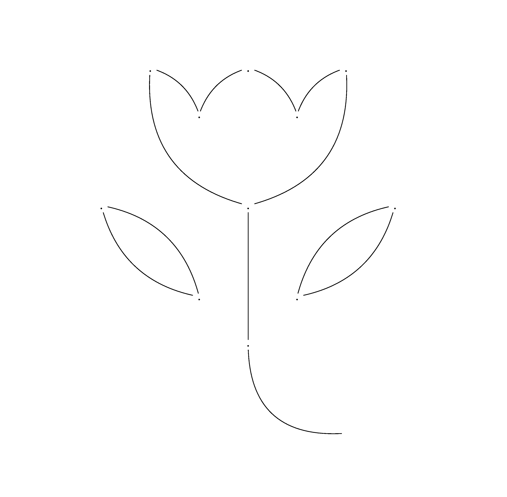
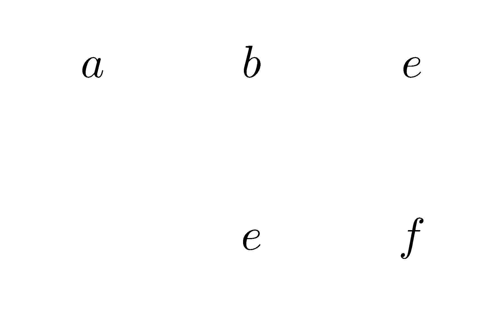
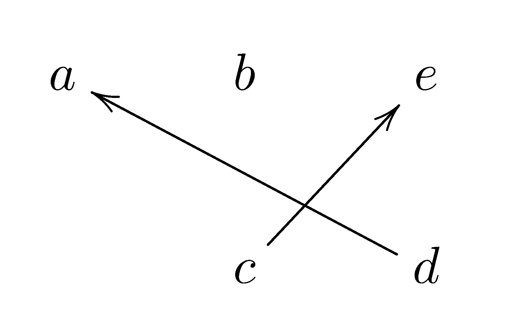
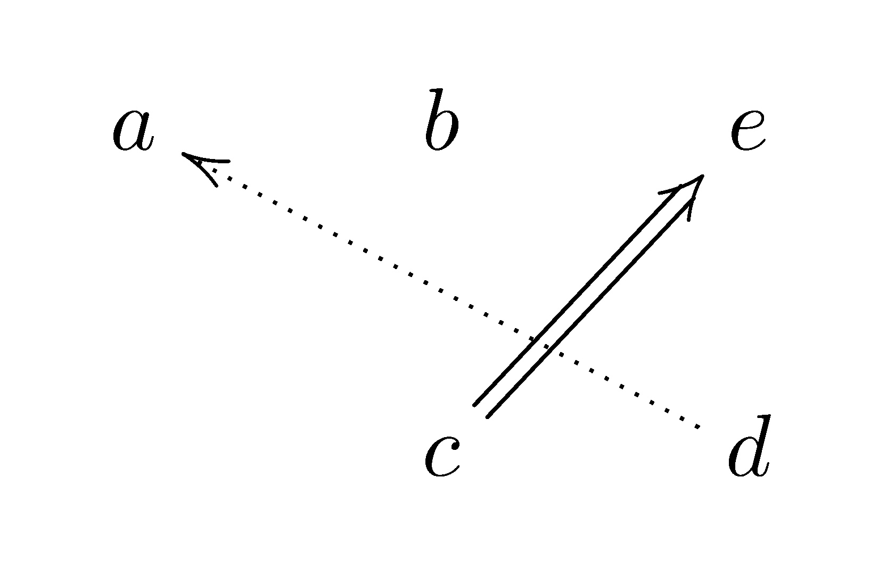
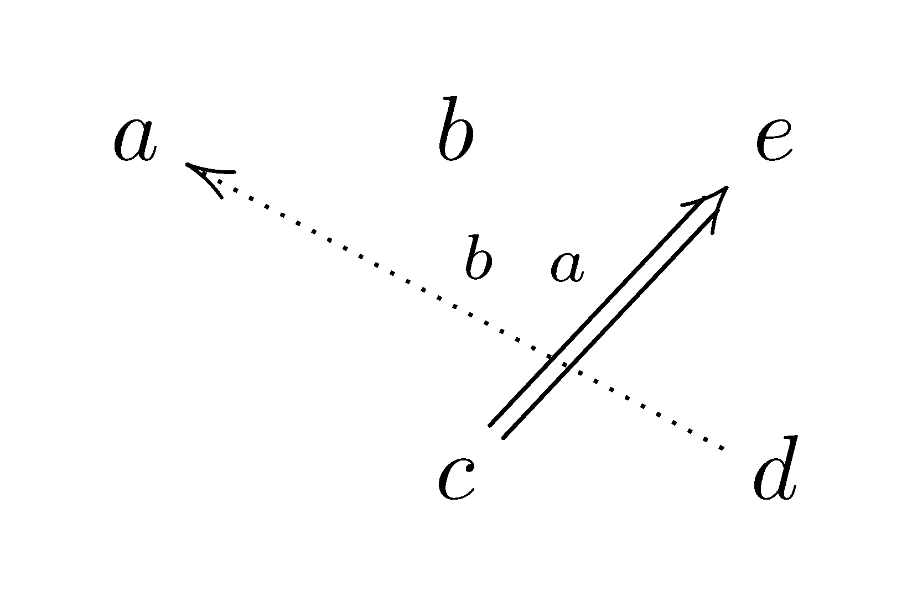
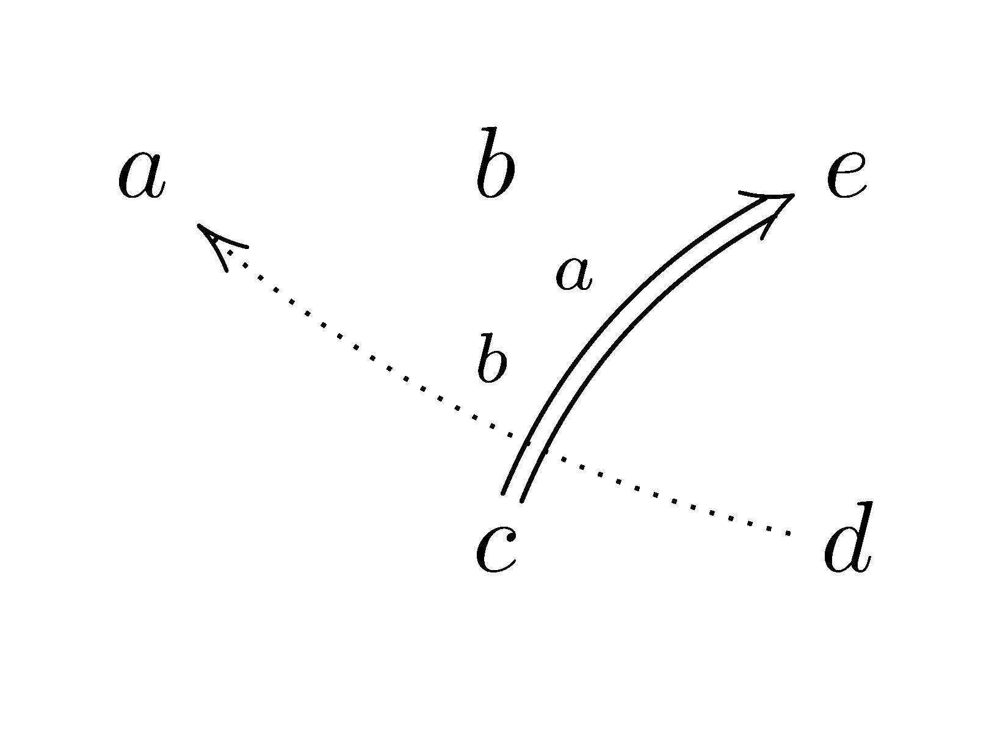
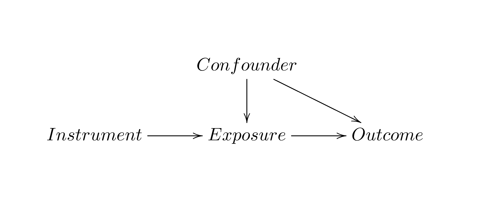

Draw a flower with XY-pic package in LATEX
By Jinghong Zeng
- 2 minutes read - 364 wordsRecently, I found that XY-pic package can draw complex diagrams in LATEX. It allows users to design the diagram and draw as in a matrix. So a diagram is sliced implicitly as a matrix, where each entry is an element of this matrix. It becomes easy to draw a diagram based on positions.
I saw a flower pattern on the tissues that I use everyday. So I drew this flower:

Basics
Basics of XY-pic package are useful. Start the diagram with \xymatrix{}. The content is matrix-like. Here is an example of a 2x3 matrix:
\xymatrix{
a & b & e \\
& c & d
}which gives a diagram like this:

How to typeset an arrow? Use \ar[udlr]. The arrow starts from the current entry in the matrix, and [udlr] indicates relative movement from the current entry, where [u] means up one level, [d] means down one level, [l] means left one level, [r] means right one level. Repeated movement from [udlr] means more than one steps. Just count the steps in the matrix. The example:
\xymatrix{
a & b & e \\
& c \ar[ur] & d \ar[ull]
}
Arrows have different styles. One simple style is to change the line, such as change the solid line to the dotted or dashed line. The style is specified using @{} after \ar.
\xymatrix{
a & b & e \\
& c \ar@{=>}[ur] & d \ar@{.>}[ull]
}
Labels can be added on the arrows, after \(^\) or \(_\), which are relatively over or below the arrows.
\xymatrix{
a & b & e \\
& c \ar@{=>}[ur]^a & d \ar@{.>}[ull]_b
}
How about using a curved arrow?
\xymatrix{
a & b & e\\
& c \ar@/^/@{=>}[ur]^a & d \ar@/^/@{.>}[ull]_b
}
Discussed here are just some of the basic usages. More adjustments are available for the arrow, label and entry. Also, there are more advanced use and applications of XY-pic package. Feel free to read the user’s guide. I want to mention one practical application, that is, to draw a causal diagram, like this:
\xymatrix{
& Confounder \ar[d] \ar[dr]& \\
Instrument \ar[r] & Exposure \ar[r] & Outcome
}
Reference
Kristoffer H. Rose. 2013. XY-pic User’s Guide